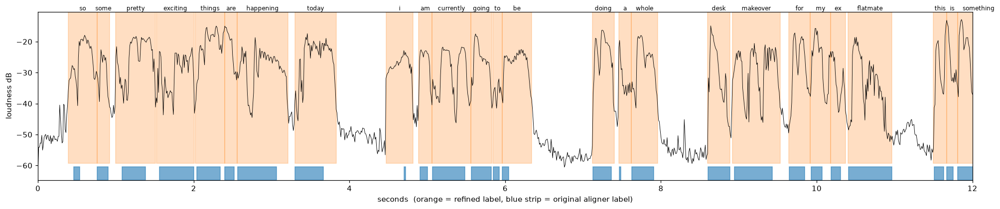

Executive summary
Switch edit-twin to —. It clears both guardrails against Whisper, the model in production today, and makes — fewer verbatim word errors on my own footage.
No challenger cleared both guardrails, so Whisper stays in production.
- Parakeet TDT 0.6B v3 (NVIDIA)
- Qwen3-ASR 1.7B (Alibaba, + forced aligner)
- Whisper large-v3-turbo (baseline, in production)
- Whisper's value, the bar to clear
Decision
—
✓ Ship as the new default
Keep Whisper
Rule fixed before running anything: a model must be no worse than Whisper on filler recall and end-of-word timing. Of those that pass, the lowest verbatim word error rate wins; speed breaks near-ties.
Verbatim word error rate
—
— vs Whisper's —
Fillers caught (um, uh)
—
— vs Whisper's —
Word-end timing error (median)
—
— vs Whisper's —
Speed (× real time)
—
— Whisper's —
Metrics
edit-twin cuts video on word timings and needs um/uh written down, which public leaderboards don't measure. So the three deciding metrics are the ones a cut depends on; the rest matter in practice but don't pick the winner.
DecidesVerbatim word error rate
What: mistakes per word against my own hand-checked transcript, with fillers and retakes kept in. Lower is better.
Why: the rough cut removes retakes and fillers, so it needs to see them exactly as said.
GuardrailFiller recall
What: share of my real um/uh/hmm the model wrote down. Higher is better.
Why: a filler that isn't transcribed can't be cut, and edit-twin learns my style from them.
GuardrailWord-end timing error
What: median gap between where the model says a word ends and where it really ends. Lower is better.
Why: cuts land on word ends; at 30 fps, 50 ms is about 1.5 frames.
Also trackedClean and formatted WER
Clean: fillers removed, comparable to public leaderboards. Formatted: capitals and punctuation count, which is what subtitles need.
Also trackedInvented words
Words written per minute over room tone, where the answer should be 0. Catches models that hallucinate over silence.
Also trackedSpeed and memory
Speed: how many times faster than real time (load time excluded). Memory: peak RAM and GPU while transcribing on my Mac.
Decision rule results and next steps
How each model scored against the rule set before testing, and what to do with the result.
How each model did against the rule
Two guardrails against Whisper first, then the lowest verbatim error rate wins.
| Model |
Fillers ≥ Whisper |
Word ends ≤ Whisper |
Verbatim WER |
Result |
Suggested next steps
What the numbers say to do now, and what they don't settle yet.
Make — the defaultSwap it in as edit-twin's transcriber, with 30 s audio chunks (see the chunking bug below).
WatchSubtitlesWith capitals and punctuation counted it scores — against Whisper's —. Keep Whisper for burned-in captions, or add a punctuation pass.
TestHybrid word timingOnly — of word ends land within 100 ms. — lands at — median with its forced aligner, so try the winner's words with that aligner's timings.
ConfirmFresh footageThe 30 s chunk size was picked after seeing these clips. Re-run on two or three new clips before calling it final.
Where each model lands
Up and to the right is better on both charts. The shaded corner is where a model beats Whisper on both axes.
The guardrails
Fillers caught against word-end timing error. Only models in the green corner are allowed to compete on accuracy.
Accuracy against speed
Verbatim word error rate against speed. The Y axis is flipped so fewer errors sit higher.
Every metric against Whisper
Change from Whisper for each challenger. Bars to the right are better, whichever way the metric runs. Gains beyond 100% are labelled as a multiple. Hover a bar for the raw values.
- Parakeet's change from Whisper
- Qwen3's change from Whisper
- Zero line = same as Whisper
Per clip
Verbatim word error rate on each clip; darker cells have more errors, and a dot marks the best on that clip. Fillers caught are shown under the rate where the clip has any.
| Clip |
Words |
Fillers |
Whisper |
Parakeet |
Qwen3 |
Findings and gotchas
Three problems that skewed early results, each caught by asking why a number looked off, and how they were fixed. Full write-up in the README.
Reference timings
The answer key was hiding a problem
Whisper word-end error—→—
Word timings were drafted by an aligner, which made words too short. Whisper's word ends are early by about the same amount, so against those labels it looked far better than it is. Fitting the labels to the waveform fixed it.

Blue: aligner labels. Orange: fitted to the waveform. Checked by eye on this plot.
Parakeet
A bug in how audio was split, not the model
Reel error rate, first run—
The errors were one solid block of about — missing words, not scattered mistakes. Splitting audio into 120 s chunks had silently lost — of speech where chunks were joined.
Bold row is the setting used. Picked after seeing these clips, so slightly flattering to Parakeet.
Qwen3-ASR
Stuck in a loop on silence
Invented words per minute—→—
On — of room tone Qwen wrote “oh, oh, oh…” — times and took —.
- It writes one token at a time, like a chatbot. With no speech, “oh,” makes another “oh,” the likeliest next token.
- Whisper's loop check would have deleted real retakes (“So AI just helped”, said three times, scores —, over its — cut-off).
- Fix: real speech needs at most — tokens/s, so each piece gets —/s. Output that uses it all never stopped: a loop, thrown away.
- Speech results were unchanged by the fix.
All results, every metric
Pooled over all clips. Best value per row in bold.
| Metric |
Whisper |
Parakeet |
Qwen3 |